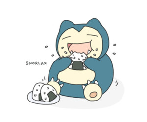

About Me
I was born on October 9th 1995 in Illinois where I spent my entire life until now. I once had aspirations to become a pharmacist, but upon working in a pharmacy, decided that it was not the path I could see myself living. Upon leaving the pharmacy I put thought into my future and decided upon a life helping people from behind the screen.
I enjoys video games, good stories, and food. In my free time I like to try and recreate recipes and try new foods from different cultures. A moment that I am both proud and slightly concerned with is when I ate 12 tacos at a friends graduation party and was wondering what was for dessert.
If you don't find me in bed, you can find me raiding the fridge or finding my next victim on yelp or grubhub.